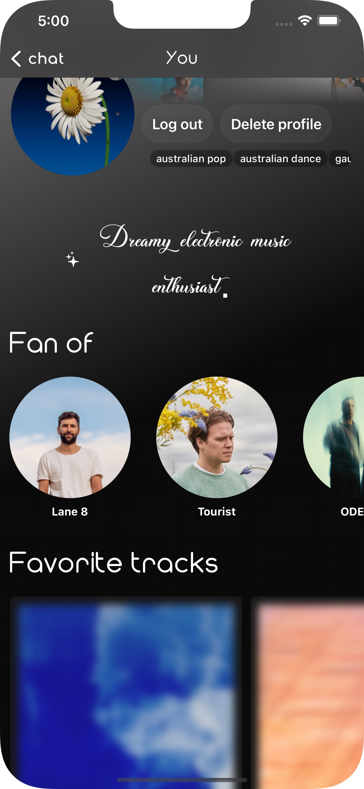

For the profile page, I layered a grid of favorite artist icons behind the user.
It’s got a subtle color-bleeding animation, inspired by old iTunes. There’s also a sparkly button that spits out cursive AI generated bio.

Other users’ profiles also show their favorite artists, genres,
and a short bio.